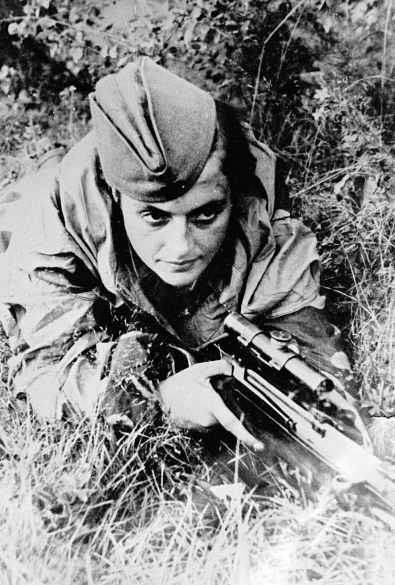

Nom : Lioudmila Mikhaïlovna Pavlichenko
Dates : 12 juillet 1916 – 10 octobre 1974
Nationalité : Soviétique (URSS)
Lioudmila Pavlichenko est l’une des tireuses d’élite les plus célèbres de la Seconde Guerre mondiale. Engagée dans l’Armée rouge, elle devient une figure emblématique du front de l’Est, symbole de la résistance soviétique face à l’invasion allemande.
Pavlichenko s’engage en 1941 et est rapidement affectée comme sniper. Elle combat à Odessa puis à Sébastopol, où ses compétences de tireuse d’élite sont utilisées pour neutraliser officiers, observateurs et snipers ennemis. Blessée, elle est retirée du front et envoyée en mission diplomatique en Amérique du Nord pour défendre la cause de l’URSS auprès des Alliés.
Lioudmila Pavlichenko incarne à la fois l’efficacité militaire et la dimension symbolique de la propagande soviétique. Son parcours met en lumière le rôle des femmes dans la guerre, l’usage des snipers et la manière dont les destins individuels sont utilisés pour porter un récit national.